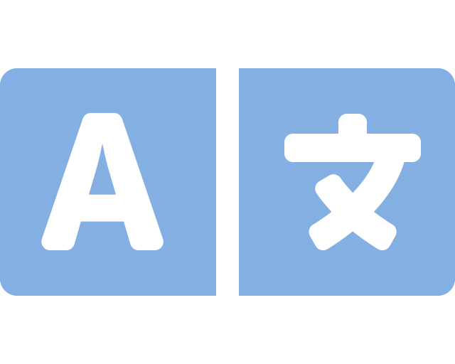
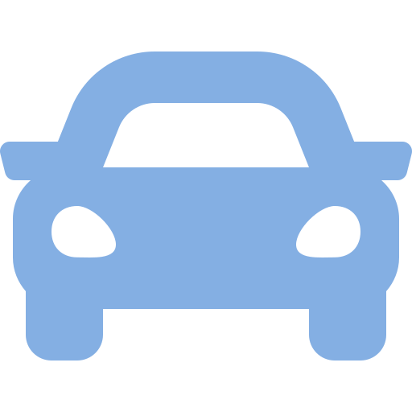

Matteo Rinaldi
Curriculum Vitae
LINGUE, PATENTI, ALTRO

Madrelingua:
Italiano
Italiano
Altra lingua:
Inglese
Inglese
| Comprensione | Parlato | Produzione scritta | ||
| Ascolto | Lettura | Interazione | Produzione orale | |
| B1 | B2 | A1 | A2 | B1 |

Patenti:
B
B
Hobby:
Lettura
Lettura
Buone competenze comunicative e relazionali sviluppate durante il corso "Sviluppatore Front End" e la mia esperienza come volontario in servizio civile presso il Consiglio Nazionale delle Ricerche.
Utilizzo degli strumenti della suite per ufficio (elaboratore di testi, foglio elettronico, software di presentazione) utilizzata durante il percorso scolastico, livello base.